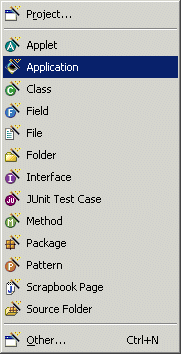
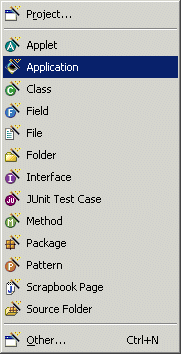
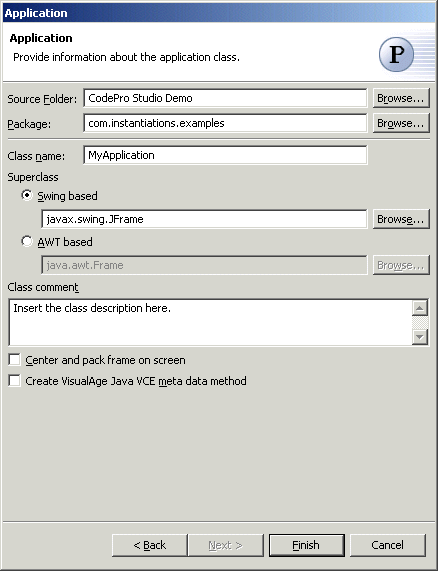

Java Application Wizard
The Java Application Wizard allows you to create new Java applications subclassed from
java.awt.Frame or javax.swing.JFrame. New Applications can be created via the standard New
wizard by selecting the "Java" category or via the popup "New" menu.
Applications can also be created by selecting the  Application pattern in the
Application pattern in the  Java Pattern Wizard.
Java Pattern Wizard.
 

Wizard

| Option | Description | Default |
| Source folder | Enter a source folder for the new class. Either type a valid source folder path or click Browse to select a source folder via a dialog. | The source folder of the element that was selected when the wizard was started. |
| Package | Enter a package to contain the new class. Either type a valid package name or click Browse to select a package via a dialog. | The package of the element that was selected when the wizard has been started. |
| Class name | Type a name for the new application class. | <Application> |
| Superclass | Type or click Browse to select a superclass for this class. | <javax.swing.JFrame> or <java.awt.Frame> |
| Class comment | Enter the description of the application | <blank> |
| Center and pack frame on screen | Determines whether the frame is centered and packed on the screen | <false> |
| Create VisualAge Java VCE meta data method | Determines whether VisualAge Java VCE meta data is generated. Meta data will allow the class to be edited with the VCE Bridge | <false> |